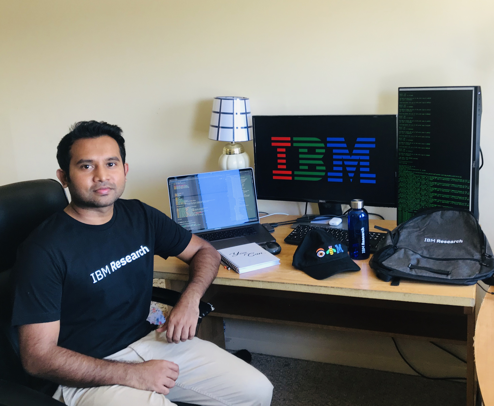
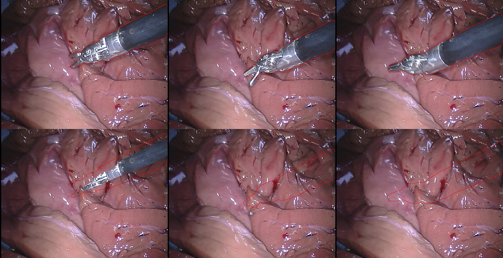
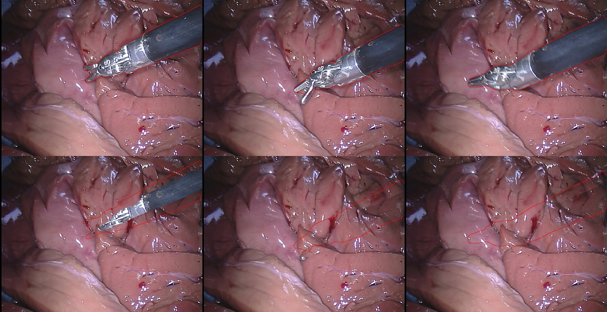
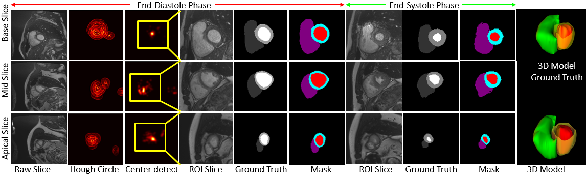
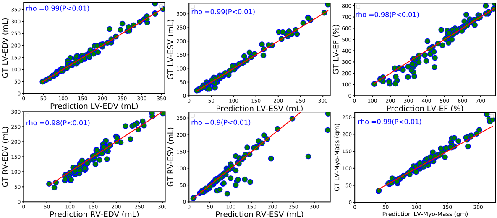
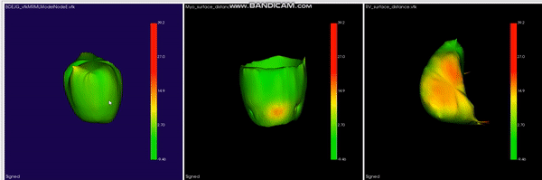
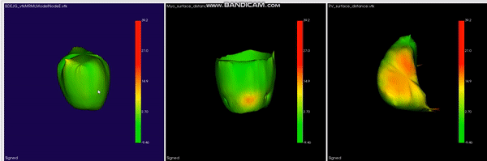
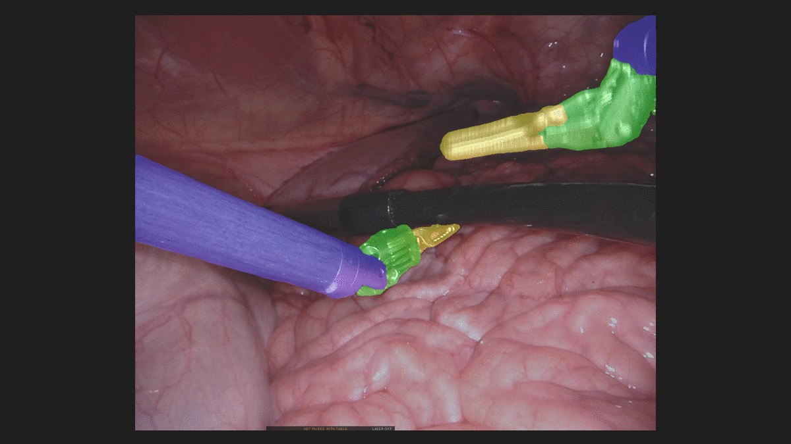
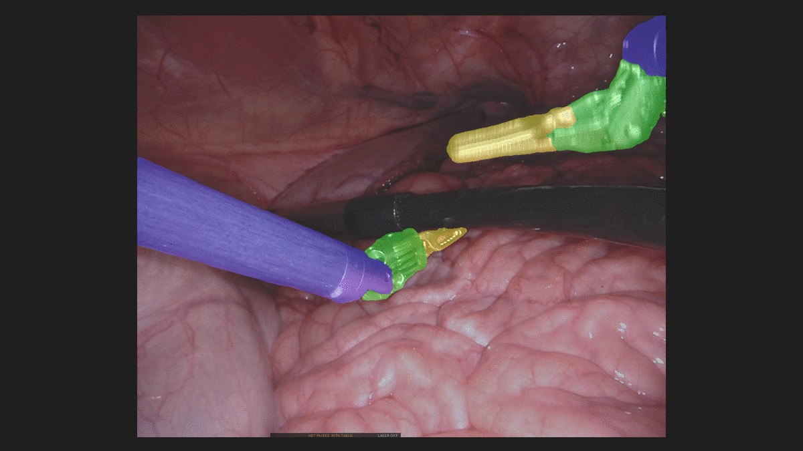

S. M. Kamrul HasanPh.D Student
Biomedical Modeling, Visualization & Image-guided Navigation (BMVIGN) Lab
|
 |


Biography
I am a fourth year Ph.D. student in Chester F. Carlson Center for Imaging Science at Rochester Institute of Technology (RIT), Rochester, NY where I work on medical image analysis using machine learning.
In Fall 2020, I worked as a Machine Learning Research Intern at IBM Research in California where I've worked on deep neural network pruning/optimization for better explainable AI. I am currently working in the Biomedical Modeling, Visualization and Image-guided Navigation Lab (a.k.a. BiMVisIGN) under the direction of my advisor, Dr. Cristian Linte and funded by both NSF and NIH grants . Previously, I earned a bachelors in Electrical and Electronic (EE) Engineering from Khulna University of Engineering & Technology (KUET), Bangladesh in 2015 and worked as a Lecturer in the Department of Computer Science and Engineering at Daffodil International University, Bangladesh until 2017.Research
My research focuses broadly on analyzing the medical images to enable more accurate segmentation, disease detection, and clinical parameter estimation, and allow more precisely tailored treatment plans, and ultimately improve patient outcomes, through the innovative use of Generative Models, Disentangled Representation Learning and Model Optimization in Deep Learning, Computer Vision, and Artificial Intelligence (AI).
News
- [Nov. - Dec. 2020] Started Winter School on Cardiac Simulation 2020 at Center for Computational Medicine in Cardiology, Switzerland.
- [Oct. 2020] Paper got accepted at SPIE 2021, San Diego, California.
- [Aug. 2020] Received MICCAI Student Award as a part of NSF grant.
- [Aug. 2020] Started Research Internship at IBM, Almaden Research Center, San Jose, California.
- [May. 2020] Accepted offer as Research Intern at IBM , San Jose, California.
- [Apr. 2020] One paper get accepted for oral presentation at EMBC 2020.
- [Apr. 2020] Presented paper at ISBI 2020.
- [Feb. 2020] Reviewer for MICCAI 2020..
- [Feb. 2020] Presented paper at SPIE Medical Imaging 2020.
- [Feb. 2020] One paper get accepted at ISBI 2020 WOrkshop.
- [Nov. 2019] U-NetPlus paper accepted for oral presentation at RIT Graduate Showcase 2019.
- [Oct. 2019] One paper get accepted at SPIE Medical Imaging 2020.
- [Apr. 2019] One paper get accepted at EMBC 2019.
Publications
 


|
Segmentation and removal of surgical instruments for background scene visualization from Endoscopic / Laparoscopic video. S. M. Kamrul Hasan, Richard A. Simon, and Cristian A. Linte. SPIE Medical Imaging, 2021, oral [paper][code][dataset][bibtex][Video 1] [Video 2 ][Video 3] [Video 4] In this work, we implement a fully convolutional segmenter featuring both a learned group structure and a regularized weight-pruner to reduce the high computational cost in volumetric image segmentation. We validated our framework on the ACDC dataset featuring one healthy and four pathology groups imaged throughout the cardiac cycle. Our technique achieved Dice scores of 96.80% (LV blood-pool), 93.33% (RV blood-pool) and 90.0% (LV Myocardium) with five-fold cross-validation and yielded similar clinical parameters as those estimated from the ground truth segmentation data. Based on these results, this technique has the potential to become an efficient and competitive cardiac image segmentation tool that may be used for cardiac computer-aided diagnosis, planning and guidance applications. |
|   | L-CO-Net: Learned Condensation-Optimization Network for Clinical Parameter Estimation from Cardiac Cine MRI. S. M. Kamrul Hasan, and Cristian A. Linte. International Conference of the Engineering in Medicine & Biology Society (EMBC), 2020, oral [paper][code][dataset][bibtex] In this work, we implement a fully convolutional segmenter featuring both a learned group structure and a regularized weight-pruner to reduce the high computational cost in volumetric image segmentation. We validated our framework on the ACDC dataset featuring one healthy and four pathology groups imaged throughout the cardiac cycle. Our technique achieved Dice scores of 96.8% (LV blood-pool), 93.3% (RV blood-pool) and 90.0% (LV Myocardium) with five-fold cross-validation and yielded similar clinical parameters as those estimated from the ground truth segmentation data. Based on these results, this technique has the potential to become an efficient and competitive cardiac image segmentation tool that may be used for cardiac computer-aided diagnosis, planning, and guidance applications. |

 

|
Learned Condensation-Optimization Network: A regularized Network for improved Cardiac Ventricles Segmentation on Breath-Hold Cine MRI. S. M. Kamrul Hasan, and Cristian A. Linte. International Symposium on Biomedical Imaging (ISBI), 2020, oral [paper][code][dataset][bibtex] In this work, we implement a fully convolutional segmenter featuring both a learned group structure and a regularized weight-pruner to reduce the high computational cost in volumetric image segmentation. We validated the framework on the ACDC dataset and achieved accurate segmentation, leading to mean Dice scores of 96.80% (LV blood-pool), 93.33% (RV blood-pool), 90.0% (LV Myocardium) and yielded similar clinical parameters as those estimated from the ground-truth segmentation data. |


|
CondenseUNet: a memory-efficient condensely-connected architecture for bi-ventricular blood pool and myocardium segmentation. S. M. Kamrul Hasan, and Cristian A. Linte. SPIE Medical Imaging, 2020, oral [paper][code][dataset][bibtex] With the advent of Cardiac Cine Magnetic Resonance (CMR) Imaging, there has been a paradigm shift in medical technology, thanks to its capability of imaging different structures within the heart without ionizing radiation. However, it is very challenging to conduct pre-operative planning of minimally invasive cardiac procedures without accurate segmentation and identification of the left ventricle (LV), right ventricle (RV) blood-pool, and LV-myocardium. Manual segmentation of those structures, nevertheless, is time-consuming and often prone to error and biased outcomes. Hence, automatic and computationally efficient segmentation techniques are paramount. In this work, we propose a novel memory-efficient Convolutional Neural Network (CNN) architecture as a modification of both CondenseNet, as well as DenseNet for ventricular blood-pool segmentation by introducing a bottleneck block and an upsampling path. Our experiments show that the proposed architecture runs on the Automated Cardiac Diagnosis Challenge (ACDC) dataset using half (50%) the memory requirement of DenseNet and one-twelfth (∼ 8%) of the memory requirements of U-Net, while still maintaining excellent accuracy of cardiac segmentation. We validated the framework on the ACDC dataset featuring one healthy and four pathology groups whose heart images were acquired throughout the cardiac cycle and achieved the mean dice scores of 96.78% (LV blood-pool), 93.46% (RV blood-pool) and 90.1% (LVMyocardium). These results are promising and promote the proposed methods as a competitive tool for cardiac image segmentation and clinical parameter estimation that has the potential to provide fast and accurate results, as needed for pre-procedural planning and / or pre-operative applications. |

|
Toward Quantification and Visualization of Active Stress Waves for Myocardial Biomechanical Function Assessment. Niels F Otani, Dylan Dang, Christopher Beam, Fariba Mohammadi, Brian Wentz, S. M. Kamrul Hasan, Suzanne M Shontz, Karl Q Schwarz, Sabu Thomas, and Cristian A. Linte. Computing in Cardiology (CinC), 2019. [paper][code][dataset][bibtex] Estimating and visualizing myocardial active stress wave patterns is crucial to understanding the mechanical activity of the heart and provides a potential non-invasive method to assess myocardial function. These patterns can be reconstructed by analyzing 2D and/or 3D tissue displacement data acquired using medical imaging. Here we describe an application that utilizes a 3D finite element formulation to reconstruct active stress from displacement data. As a proof of concept, a simple cubic mesh was used to represent a myocardial tissue “sample” consisting of a 10 x 10 x 10 lattice of nodes featuring different fiber directions that rotate with depth, mimicking cardiac transverse isotropy. In the forward model, tissue deformation was generated using a test wave with active stresses that mimic the myocardial contractile forces. The generated deformation field was used as input to an inverse model designed to reconstruct the original active stress distribution. We numerically simulated malfunctioning tissue regions (experiencing limited contractility and hence active stress) within the healthy tissue. We also assessed model sensitivity by adding noise to the deformation field generated using the forward model. The difference image between the original and reconstructed active stress distribution suggests that the model accurately estimates active stress from tissue deformation data with a high signal-to-noise ratio. |


 

|
U-NetPlus: A Modified Encoder-Decoder U-Net Architecture for Semantic and Instance Segmentation of Surgical Instruments from Laparoscopic Images. S. M. Kamrul Hasan, and Cristian A. Linte. International Conference of the IEEE Engineering in Medicine and Biology (EMBC), 2020, oral [paper][code][dataset][bibtex] With the advent of robot-assisted surgery, there has been a paradigm shift in medical technology for minimally invasive surgery. However, it is very challenging to track the position of the surgical instruments in a surgical scene, and accurate detection & identification of surgical tools is paramount. Deep learning-based semantic segmentation in frames of surgery videos has the potential to facilitate this task. In this work, we modify the U-Net architecture by introducing a pre-trained encoder and re-design the decoder part, by replacing the transposed convolution operation with an upsampling operation based on nearest-neighbor (NN) interpolation. To further improve performance, we also employ a very fast and flexible data augmentation technique. We trained the framework on 8 x 225 frame sequences of robotic surgical videos available through the MICCAI 2017 EndoVis Challenge dataset and tested it on 8 x 75 frame and 2 x 300 frame videos. Using our U-NetPlus architecture, we report a 90.20\% DICE for binary segmentation, 76.26% DICE for instrument part segmentation, and 46.07% for instrument type (i.e., all instruments) segmentation, outperforming the results of previous techniques implemented and tested on these data. |


|
A Modified U-Net Convolutional Network Featuring a Nearest-neighbor Re-sampling-based Elastic-Transformation for Brain Tissue Characterization and Segmentation. S. M. Kamrul Hasan, and Cristian A. Linte. Western New York Image and Signal Processing Workshop (WNYISPW), 2018, oral [paper][code][dataset][bibtex] Brain tumor detection through Magnetic Resonance Imaging (MRI) is a very challenging task even in today's modern medical image processing research. Expert Neuro-radiologists diagnose even glioblastoma types deadly brain cancer using manual segmentation which is tedious and even not accurate that much. Deep learning models like U-net deep convolution neural networks have been widely used in biomedical image segmentation. Though this model works better on BRATS 2015 dataset by using pixel-wise segmentation map of the input image like an auto-encoder which assures best segmentation accuracy, but it is not correct for all the cases. So, I have planned to improve this U-net model by replacing the de-convolution part with the upsampled by Nearest-neighbor algorithm and also by using elastic transformation for increasing the training dataset to make the model more robust on Low graded tumor. I had trained my NNRET U-net model on BRATS 2017 dataset and got a better performance than the state of the art classic U-net model. |
Professional Activities
-
Research Intern 2020
IBM, San Jose, California
Interpretable AI for Deep Neural Network Optimization
-
Research Assistant
RIT Biomedical Modeling, Visualization and Image-guided Navigation Lab
Advisor: Cristian A. Linte, Ph.D
-
Quantification of Clinical parameters for predicting the clinical decision of having heartattack from the segmentation results obtained from our novel, and memory-efficient (only0.34 million parameters) architecture as well as generative models (GANs, VAEs) in bothsupervised and semi-supervised manner
Honors & Awards
-
MICCAI student travel award as a part of NSF Grant (2020) -
Best paper award , Western New York Image and Signal Processing Workshop (2018) -
Imagine Festival RIT Award from KODAK (2017) -
RIT Graduate Scholarship (2017) -
Awarded for achieving GPAs of 3.85∼4.0 in total of six out of eight semesters (2012-2015)
Reviewing
-
Conference Reviews:
NeurIPS 2020
MICCAI 2020
IEEE Access 2019
IJCARS 2020
IPCAI 2020
© S. M. Kamrul Hasan | Last updated: Sep 2020